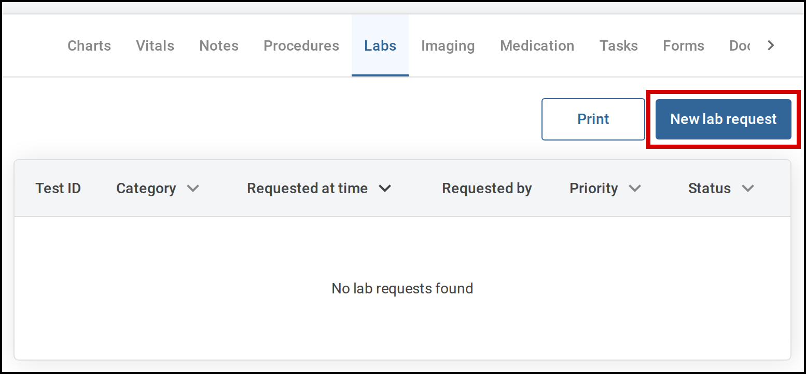
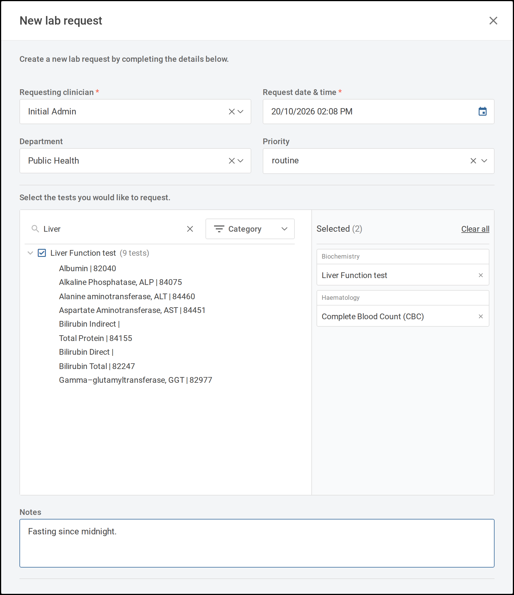
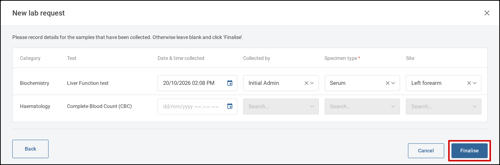
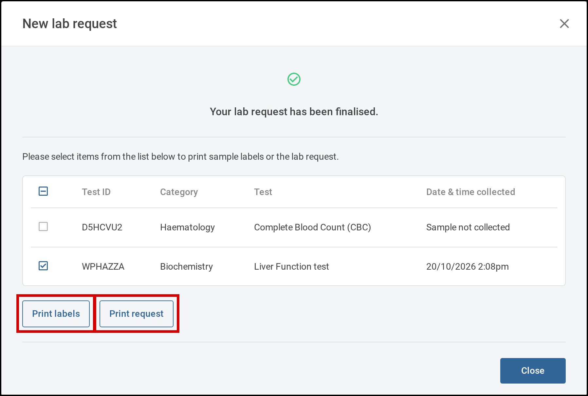
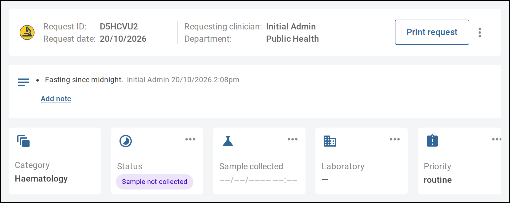
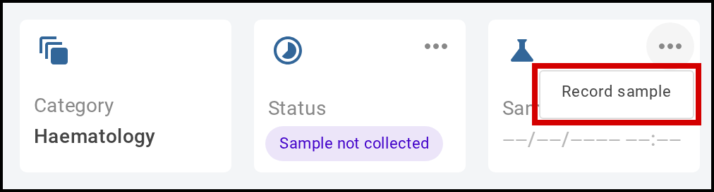
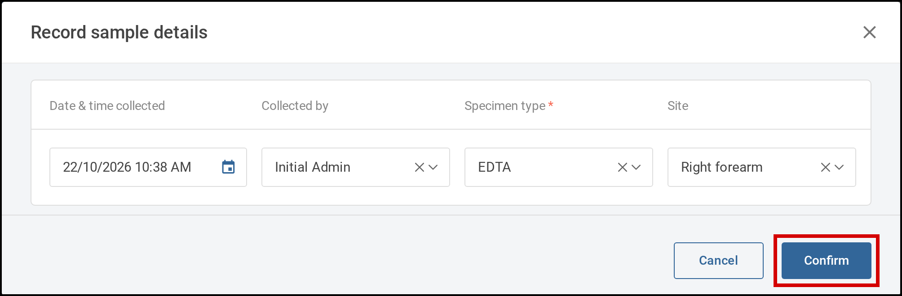
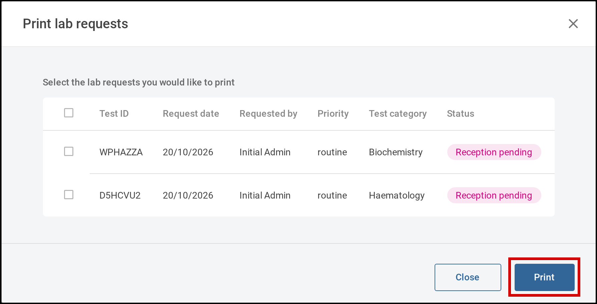
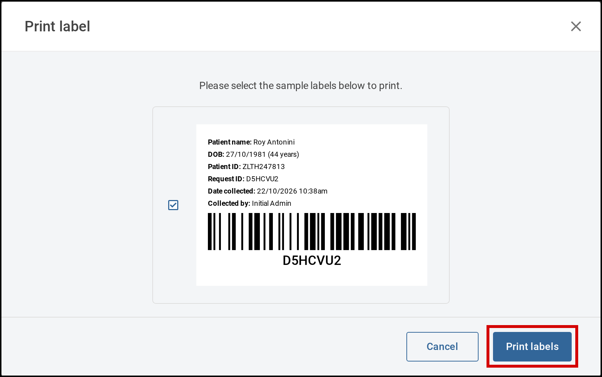
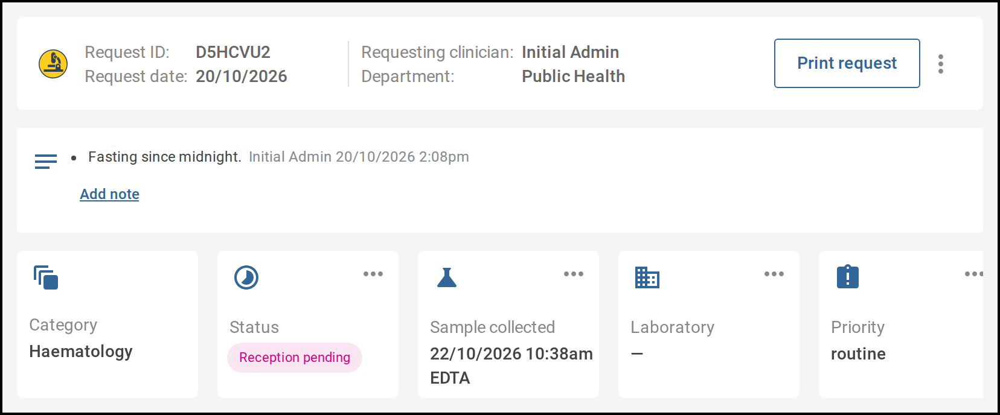

17. Labs
Requesting lab tests for a patient, recording their samples, and entering, viewing and printing the results.
| # | Guide | Covers |
|---|---|---|
| 17.1 | Request lab tests | Choosing tests and panels for a patient, recording the samples collected, and finalising the request |
| 17.2 | Record a sample | Recording a sample on a request made before the sample was collected |
| 17.3 | Print lab requests and labels | Printing lab request forms and sample labels |
| 17.4 | Update a lab request | Changing a request's status, laboratory or priority, correcting its sample, and adding notes |
| 17.5 | Enter lab results | Recording the results of a request's tests |
| 17.6 | View lab results | Reading results on a request and on the patient's record |
| 17.7 | Print lab results | Printing results, interim reports and rejection reports |
| 17.8 | Find lab requests | Finding requests across all patients in the Labs listings |
| 17.9 | Cancel a lab request | Cancelling a request made in error |
17.1 Request lab tests Verified on demo site
You request lab tests from the Labs tab of a patient's current encounter. You choose the tests and panels on one screen, then record any samples you have already collected. Tamanu makes one lab request for each test category you order from.
Steps
-
Open the patient's current encounter and select the Labs tab.

Select New lab request on the encounter's Labs tab. -
Select New lab request.The New lab request window opens.
-
Check the request details at the top of the window, and change any that are wrong.
- Requesting clinician is filled in with your name
- Request date & time is filled in with the current date and time
- Department is filled in with the encounter's department
- Priority is optional unless your site requires it
-
Select the tests and panels you want.Tests are grouped by category, and each panel shows how many tests it contains.
- To find a test or panel, type its name in Search test or panel, or choose a category from Category
- To see the tests in a panel, select the arrow beside it
- Selecting a panel greys out the tests it already contains, so the same test can't be ordered twice
- Your choices are listed under Selected, grouped by category. To remove one, select the × beside it. To remove them all, select Clear all

Choose tests and panels, then select Next. -
Add anything the laboratory should know in Notes, then select Next.Next is available once you have selected at least one test or panel.
-
Record the samples you have collected.Each test category has its own row. For each sample:
- Enter the Date & time collected. Collected by fills in with your name, and Specimen type may fill in with the usual type for that category
- Check or change Collected by, Specimen type and Site
- Where your site requires a specimen type, Specimen type is marked with a red asterisk
Leave a row blank if its sample hasn't been collected yet. You can record it later (see 17.2 Record a sample).
Record the samples collected, then select Finalise. -
Select Finalise.Tamanu shows Your lab request has been finalised. and lists a request for each category, with its Test ID. To print sample labels or the request form, tick the requests and select Print labels or Print request (see 17.3 Print lab requests and labels). Then select Close.The requests appear on the encounter's Labs tab. A request with a recorded sample shows Reception pending, and one without shows Sample not collected.If your site prints sample labels automatically and you recorded every sample, the label print screen opens instead. Select the labels to print and print them.

Print sample labels or the request, or select Close.
17.2 Record a sample Verified on demo site
A lab request made before its sample was collected shows Sample not collected. Once the sample has been taken, you record it on the request, starting from the Labs tab of the patient's encounter. The request can't move on until its sample is recorded.
Steps
-
On the encounter's Labs tab, select the request.The lab request opens.

A request without a sample shows Sample not collected. -
On the Sample collected tile, select the three dots, then Record sample.The Record sample details window opens.

Select the three dots on Sample collected, then Record sample. -
Enter the Date & time collected.Collected by fills in with your name, and Specimen type may fill in with the usual type for the request's category. Check or change Collected by, Specimen type and Site.

Check the sample details, then select Confirm. -
Select Confirm.The Sample collected tile shows the date and time collected and the specimen type, and the status changes to Reception pending.If your site prints sample labels automatically, the label print screen opens. Select Print labels to print the sample's label, or Cancel to close the screen.
17.3 Print lab requests and labels Verified on demo site
You can print lab request forms to send with samples, and sample labels to stick on the sample containers. Print several of a patient's requests at once from the Labs tab of their encounter, or one request or label from the request itself. You can also print them straight after making a request (see 17.1 Request lab tests).
Steps
Print several requests
-
On the encounter's Labs tab, select Print.The Print lab requests window opens.

Tick the requests to print, then select Print. - Tick the requests you want to print, then select Print.
Print one request
-
On the encounter's Labs tab, select the request.The lab request opens.
-
Select Print request.A preview of the request form opens.[Screenshot: the lab request form preview]
- Select Print.
Print a sample label
-
On the encounter's Labs tab, select the request.The lab request opens.
-
Select the three dots beside Print request, then Print label.The Print label window opens with a preview of the sample label. The label shows the patient's details, the request ID as a barcode, and the sample's collection details.

Check the label, then select Print labels. - Select Print labels.
17.4 Update a lab request Not yet verified
As a lab request moves through the laboratory, you update its status, and you can change the laboratory handling it or its priority. You can also correct a recorded sample and add notes. Start each from the lab request: on the Labs tab of the patient's encounter, select the request.
A rejected, cancelled or invalidated request can't be changed. Which changes you can make also depends on your account's permissions. If you believe you should be able to make a change you can't, contact your system administrator.

Steps
Change the status
-
On the Status tile, select the three dots, then Change status.The Change lab request status window opens. You can't change the status until the request's sample is recorded, and entering results doesn't change it, so change it as your laboratory's process requires.
-
Choose the new Status, then select Confirm.The Status tile shows the new status.[Screenshot: the Change lab request status window]
View the status history
-
On the Status tile, select the three dots, then View status log.The Status Log window lists each status the request has had, with the date and time and who recorded it.
Change the laboratory
- On the Laboratory tile, select the three dots, then Change laboratory.
- Choose the Laboratory that will handle the sample, then select Confirm.
Change the priority
Some sites don't allow a request's priority to be changed after it is made.
- On the Priority tile, select the three dots, then Change priority.
- Choose the Priority, then select Confirm.
Correct a recorded sample
-
On the Sample collected tile, select the three dots, then Edit.The Edit sample window opens. To check the sample's details without changing them, select View details instead.
- Correct the details, then select Confirm.
Add a note
- Below the request details, select Add note.
-
Type the note and save it.The note appears with your name and the date and time.
17.5 Enter lab results Not yet verified
When the laboratory has tested a sample, you enter the results on the lab request. Start from the Labs tab of the patient's encounter, or from the Labs listings (see 17.8 Find lab requests).
Before you start
You need permission to enter results, and a published request's results can't be changed. If you believe you should be able to enter results you can't, contact your system administrator.
Steps
-
Select the request.The lab request opens, with its tests listed in a table.
-
Select Enter results.The Enter results window opens, listing each test on the request.[Screenshot: the Enter results window for a liver function panel]
-
For each test with a result, enter the Result.Where they apply, also fill in:
- Secondary result, where the test records one
- Method
- Verification
- Completed, the date the test was completed
- Enter any notes on the results in Results interpretation.
-
Select Confirm.The results appear in the request's table. The status stays as it was, so change it when your laboratory's process requires (see 17.4 Update a lab request).
17.6 View lab results Not yet verified
You can read a request's results on the lab request itself as soon as they are entered. Once a request is published, its results also appear on the patient's Results tab, alongside their earlier results.
Before you start
You need permission to view lab results. If you believe you should be able to view them, contact your system administrator.
Steps
On the lab request
-
On the Labs tab of the patient's encounter, select the request.The results table lists each test with its Result, Units, Reference range, Method, Lab officer, Verification and Completed date.
-
Check for highlighted results.A result outside its reference range is highlighted, and hovering over it shows the limit it is outside. A value changed after it was first entered has a faded asterisk beside it, and * Edited entry appears below the table.[Screenshot: a lab request's results table with an out-of-range result highlighted]
- To save the results as a file, select Download below the table.
On the patient's record
- On the patient's record, select the Results tab.
-
Choose a Test category or a Test panel.The table shows each test's Test type and Normal range, with a column of results for each date. Results outside the normal range are highlighted.[Screenshot: the patient's Results tab showing published liver function results]
17.7 Print lab results Not yet verified
You print a lab request's results from the request, starting from the Labs tab of the patient's encounter. What you can print depends on the request's status: final results once it is verified or published, an interim report before then, and a rejection report if the laboratory rejected the sample.
Before you start
Printing results is switched on per site, and needs permission to view lab results. If you believe you should be able to print results, contact your system administrator.
Steps
-
Select the request.The lab request opens.
-
Print the report for the request's status.
- Verified or Published: select Print results
- Reception pending, Results pending, Interim results or To be verified: select the three dots beside Print request, then Print interim report. The report shows that the results aren't final
- Rejected: select Rejection report
A request whose sample isn't collected, or that has been invalidated, has no results to print.[Screenshot: the Lab results printout preview] - Select Print.
17.8 Find lab requests Not yet verified
The Labs listings show lab requests for every patient, so laboratory staff and clinicians can find a request without opening each patient's record. Active requests lists requests still in progress, and Finalised lists requests that are published, invalidated or rejected.
Steps
-
In the menu on the left, select Labs, then Active requests or Finalised.[Screenshot: the Labs menu open, showing Active requests and Finalised]
-
To narrow the list, fill in any of the search fields, then select Search.Search by the patient's name, Request ID or Test category, among others. More fields, such as Department and Area, are in the advanced search. On Finalised, Status narrows the list to published, invalidated or rejected requests.[Screenshot: the Active lab requests listing, searched for one patient]
-
Select a request to open it.When the laboratory rejects a sample, the requesting clinician also gets a notification on their Dashboard, and selecting it opens the rejected request.
17.9 Cancel a lab request Not yet verified
If a lab request was made in error, you can cancel it, starting from the Labs tab of the patient's encounter. A published request can't be cancelled.
Steps
-
Select the request.The lab request opens.
-
Select the three dots beside Print request, then Cancel request.The Cancel lab request window opens.[Screenshot: the Cancel lab request window]
-
Choose the reason for cancelling.Some reasons permanently delete the request, and the window tells you when you have chosen one.
-
Select Confirm.The request's status shows Cancelled.
- Verified on demo site: 17.1 to 17.3, clicked through on the 2.66 demo site with the test patient, and their screenshots taken there. The request form preview in 17.3 stays a placeholder, because the headless browser can't render its PDF
- Not yet verified: 17.4 to 17.9, written from the v2.66.1 code. 17.4's opening shot is from the demo site, and dashed boxes are the screenshot placeholders still to fill
- Proposed red outlines are on the control each step asks the reader to select: New lab request, Next, Finalise, Print labels and Print request, Record sample, Confirm, Print and Print labels